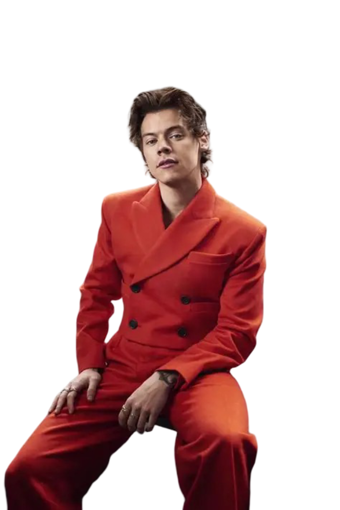

Harry Edward Styles was born on February 1, 1994, in Redditch, Worcestershire, England, and was raised in Holmes Chapel, Cheshire.
He is currently 31 years old as of 2025. Styles first rose to global prominence in 2010 as a member of the massively successful boy band One Direction, which emerged from the UK edition of The X Factor.
After the group went on hiatus, Styles successfully transitioned into a highly acclaimed solo career as both a singer-songwriter and an actor.
Styles' solo music, which often blends elements of pop, soft rock, and Britpop, has earned him immense critical and commercial success.
His most celebrated work is the 2022 album, Harry's House, which earned him the prestigious Grammy Award for Album of the Year, alongside the Grammy for Best Pop Vocal Album. He has also secured another Grammy for Best Pop Solo Performance for his 2019 smash hit, "Watermelon Sugar," and has collected six Brit Awards, including British Artist of the Year.
His single, "As It Was," was a global phenomenon and Billboard's number-one song of 2022. Other notable tracks that define his solo discography include "Sign of the Times," "Adore You," "Golden," and the fan-favorite "Matilda."